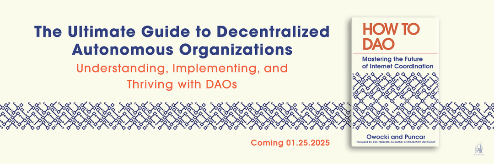
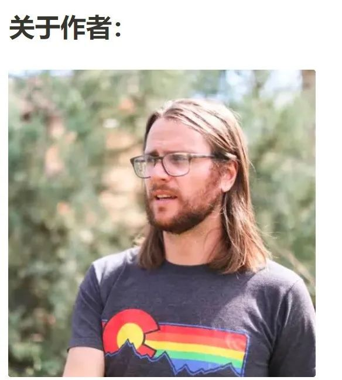
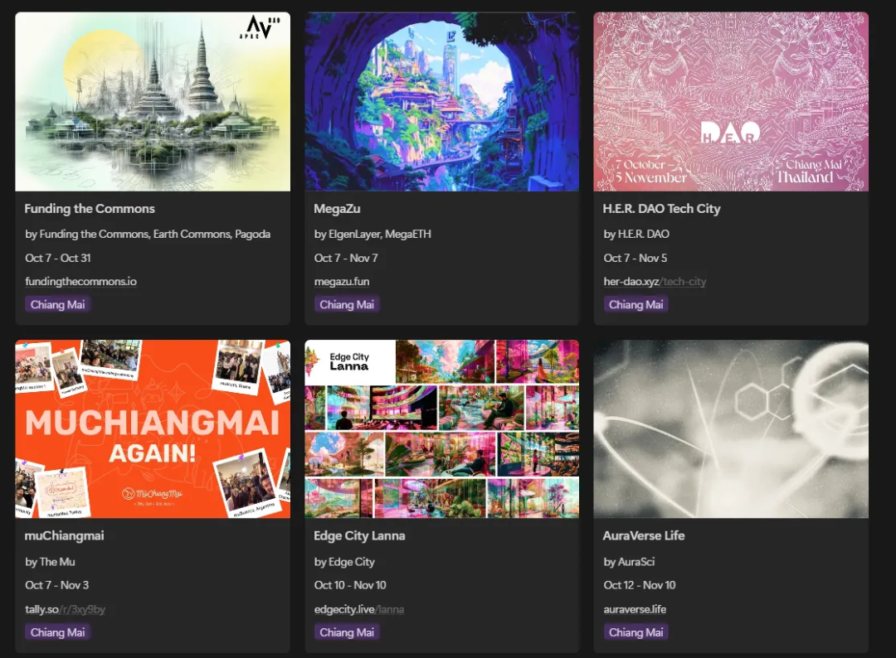
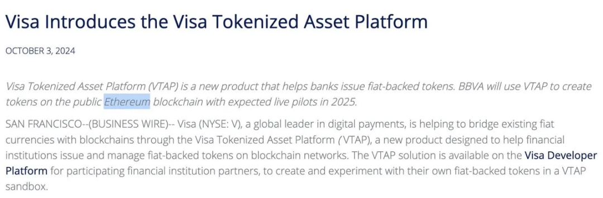
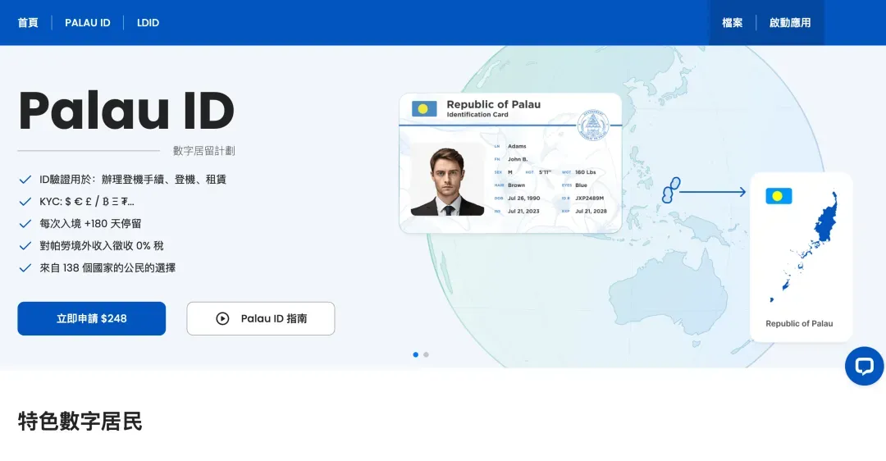
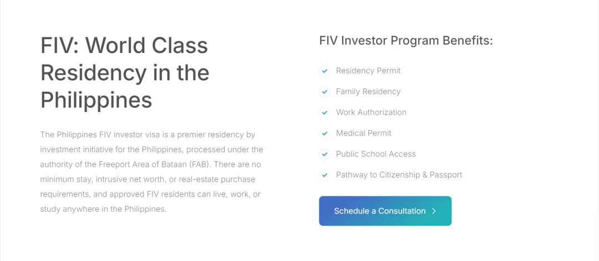
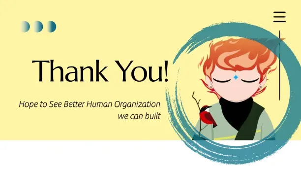
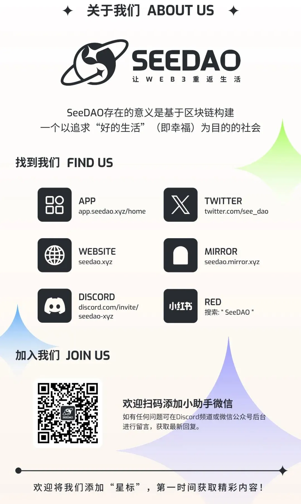

本专栏正在持续收录国际 Crypto、web3、DAO Builder 的最新动态，为华语世界的小伙伴一窥世界的窗口。
01
Green Pill × Bankless DAO 强强联合之作

官网介绍：
欢迎来到互联网协作的未来！
或许你听到各种与“去中心化自治组织” DAO 的讨论，以及 DAO 如何重新定义工作与赚钱。
但倘若剥离炒作与行业黑话，DAO 究竟是什么？究竟如何运作，为何有效？以及我们如何在这个如“美丽的新世界”般的工作环境中茁壮成长？
在《How to DAO》这本书中，行业老兵 Kevin Owocki 和 Puncar 将会带你迈上一条康庄大道，带你走进这个颠覆性的领域，探索去中心化金融的原则、设置并运营一个DAO的具体细节，从智能合约、治理机制到改革创新。
在这本书中，你将理解 DAOs 究竟是什么，并学会一些技巧和窍门，驾驭这项潜力无限的变革性技术。
Kevin Owocki
Gitcoin 创始人，作为一名技术、开源和区块链交叉领域充满活力的领导者和创变者，Kevin 对促进协作和创新有着深厚的热情，他将为软件开发和区块链社区带来积极变革作为自己职业生涯的追求。
作为加密货币领域的知名人物，Kevin 因其推动公共产品建设以及开创激励开源贡献的新模式，而备受认可。
通过 Gitcoin，他不懈地推动 Web3 生态系统的发展，帮助平台成为全球公共产品和开源软件的关键支持力量，并显著促进了这些领域的增长与可持续性。
Puncar
Bankless Consulting 联合创始人，致力于推动互联网原生组织、协作和区块链领域的赋权、赋能。
在坚守去中心化的同时，他通过深度参与 Gitcoin、Maker 和 IndexCoop 等多个区块链项目的创新与合作，带着赋能互联网原生社区的使命，成为了区块链世界中的先驱。
他强调协作与去中心化治理，是新世界的支柱。凭借专业与承诺，他在互联网原生组织运动中位列前席，并持续倡导去中心化、开源开发以及区块链技术的普及与应用。
目前，这本书已经可以在网上预定。目前官网已经开放了预定书籍、线上线下活动，以及联系作者的入口。
官网链接：https://www.howtodao.xyz/
02
目前有一份 Notion 文档收录了 26 场 正在泰国发生的深度活动，包括 Popup Cities、Hacker Houses，以及 Builder 驻留计划。

Notion 详情：https://0xmku.notion.site/Devcon-2024-Builder-Houses-110c1251cc5b800d8693cb0cb4f78dfb
03

Visa 的官方 Token 发行平台 VTAP ， 将在 2025 年支持将法币发行为链上稳定币。
该计划会使用以太坊作为资产发行平台，并开放给其金融合作伙伴使用。
Visa 拥有由 15,000 多家金融机构组成的全球网络，帮助促进 200 多个国家和地区的法定货币无缝交易。
例如，银行可以使用智能合约自动化管理复杂信贷额度等流程，并在满足付款条件时使用稳定币放款。银行还可以让其客户使用稳定币购买上链的商品、国债，并在链上进行近乎实时的结算。
Visa 的愿景是让 VTAP 支持银行实现跨链交互（interoperability ）。在未来，通过与 VTAP 的单一 API 连接，银行可以支持多种应用场景，与公链或私有链上的客户进行交易。为了支持链上资产能够在生态系统中被广泛采用，Visa 致力于支持稳定币与链上资产的安全跨链交互。
Visa 全球创新和数字合作主管 Vanessa Colella 表示：“Visa 近 60 年来一直处于数字支付领域的前沿，随着 VTAP 的推出，我们再次引领行业发展。我们很高兴能够利用我们在代币化方面的经验，帮助银行将区块链技术融入其业务。”
详细报道：https://investor.visa.com/news/news-details/2024/Visa-Introduces-the-Visa-Tokenized-Asset-Platform/default.aspx
04

几年前，帕劳数字 ID 一度成为了不少人在海外交易所 KYC 的选择。仅需 200 多美元，即可拿下这张数字 ID。除了 KYC 外，每次入境的停留时间也可以延长到 200 多天。
然而这个团队 Metropolis 并没有停下自己的脚步，而是继续寻找下一处业务，并计划在未来将各种权益/身份打包成，形成的全球公民身份协议。
而这一次，他们选择了菲律宾。
作为亚洲唯二支持双国籍的国家，和洪都拉斯一样，菲律宾同样有着自己的经济特区计划，Metropolis 团队与一处名为 Freeport Area of Bataan 的经济特区达成深度合作，并且推出了 FIV 投资计划，7500 美元即可获得永居身份，并可以在满足相关条件的情况下升级护照。
据说，与帕劳数字 ID 类似的菲律宾数字 ID 也正在筹划之中。


Metropolis 官网：https://metropolisglobal.com/
菲律宾 FIV 官网：https://philippinesfiv.com/
05
9.30日，川普发推亲自站台 World Liberty Financial，截止目前已经获得 3000 万浏览量。该项目计划 63% 的 Token 通过公售分发，并即将发售。
根据业内人士分析，这或是川普团队为了弥补在竞选资金上的压力而做出的行动。除了发售的收入，其团队可能会在发售后将手中代币进行质押套现。
但无论如何，链上协议已然成为了一种可以被总统级人物直接使用的工具。
详细分析：https://mp.weixin.qq.com/s/733vGp4WBl75-VrqCb_DAA
川普推文：https://x.com/realDonaldTrump/status/1840772362209251611?t=0opzjHQwjGe1wIAIcXFyvQ&s=19

大地之子定慧
